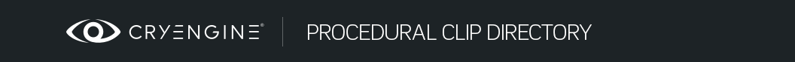

Обзор
Это список типов Процедурные клипы присутствует как в движке, так и в образце GameSDK.
Двигатель (CryAction)
ActionEvent
Отправляет событие CryMannequin действию, управляющему этим фрагментом. (для программистов: вызывает IAction::OnActionEvent)
| Название события | Название события для отправки. |
AimPose
Процедурный клип низкого уровня для начала прицелиться актив. Это NOT связано с настройкой прицеливания/смотра, описанной в руководстве. Урок. Управление взглядом (и прицеливанием) для AI в Mannequin.
| Анимация | Целевой актив |
| Смесь | Продолжительность постепенного появления |
| Время смешивания | «Время сглаживания» сферических координат (чем выше число, тем быстрее долгота/широта будет плавно перемещаться к цели) |
| Слой анимации | Слой CryAnimation (0–16), на котором будет воспроизводиться прицел. Это работает иначе, чем параметр слоя внутри процедурного клипа AimPose, который является индексом слоя относительно первого слоя анимации области видимости. |
Использует параметр называется "AimTarget" в качестве цели, если она существует. Если не указано иное, цель находится в 10 метрах от объекта.
АИСигнал
Отправляет сигнал AI непосредственно в интерфейс актера AI объекта, на котором воспроизводится клип.
| EnterAndExitSignalNames | Имена сигналов, отправляемые при входе и выходе (начало и конец) этого процедурного клипа, разделенные знаком «|». персонаж |
AttachEntity
Прикрепляет объект к определенной точке присоединения (и отсоединяет его при выходе)
| Имя вложения | Название точки крепления |
| Имя параметра с EntityId | Имя параметр в котором хранится EntityID объекта для присоединения |
AttachProp
Прикрепляет chr, skel или cga к определенной точке присоединения (и отсоединяется при выходе)
| Имя файла объекта | Имя chr, skel или cga для присоединения |
| Имя вложения | Название точки крепления |
Аудио
(новое после CRYENGINE 3.7)
Выполнить триггеры слоя перевода звука (ATL).
| Запустить триггер | (необязательно) триггер ATL для выполнения в начале |
| Остановить триггер | (необязательно) триггер ATL для выполнения в конце |
| Крепёжное соединение | (необязательно) Имя сустава, в котором выполняется триггер |
| AI Радиус | (не реализовано в версии 3.7.0) |
| Голос | (не реализовано в версии 3.7.0) |
| играть на лицо | Запросить лицевую анимацию, соответствующую звуку |
| Звуковые флаги | (зарезервировано) |
ForceFeedback
Воспроизводит эффект принудительной обратной связи.
| ForceFeedbackID | |
| Масштаб | |
| Задержка | |
| OnlyLocal | Принудительная обратная связь триггера только локально (не на удаленных игроках) |
FlowGraphEvent
(новое после CRYENGINE 3.7)
Отправляет события на flownode Actor ProcClipEventListener.
| Введите название события | Название события для отправки в начале |
| Название события выхода | Название события, которое нужно отправить в конце |
HideAttachment
(новое после CRYENGINE 3.7)
Скрывает вложение на время клипа.
| Имя вложения | Имя вложения персонажа, которое нужно скрыть |
IKLayerWeight
(новое после CRYENGINE 3.7)
Управляет весом слоя CryAnimation по значению x соединения. Это может быть связано с совместным управлением анимацией IK, отсюда и название этого клипа.
| Совместное название | Соединение, значение x которого будет контролировать вес слоя. |
| Слой области действия | Индекс слоя в этой области, которым должен управлять этот клип. |
| Инвертировать | Используйте единицу минус значение в качестве веса |
JointAdjust
(новое после CRYENGINE 3.7)
Отрегулируйте положение сустава. (под капотом используется модификатор позы очереди оператора)
| Совместное название | Сустав для регулировки |
| Слой области действия | Индекс слоя в этой области, перед которым вы хотите выполнить эту корректировку. |
| Добавка | |
| Относительно родителя | |
| Позиция |
LayerAnimSpeed
Контролирует скорость анимации, которая воспроизводится в той же области, что и этот процедурный клип, через код.
| LayerAnimSpeedParam | Имя плавающей точки параметр который хранит значение скорости (по умолчанию 0) |
| ScopeLayer | Индекс слоя в области анимации, которой вы хотите управлять. |
| Инвертировать | Установите флажок, чтобы использовать единицу минус значение параметра в качестве скорости. |
Обратите внимание, что значение Blend не используется.
LayerManualUpdate
Контролирует время (нормализованное время) анимации, которая воспроизводится в той же области, что и этот процедурный фрагмент кода.
| Имя параметра | Имя плавающей точки параметр который хранит нормализованное значение времени (по умолчанию 0) |
| Слой области действия | Индекс слоя в области анимации, которой вы хотите управлять. |
| Инвертировать | Установите флажок, чтобы использовать единицу минус значение параметра в качестве нормализованного времени. |
LayerWeight
Управляет весом слоя CryAnimation с помощью кода.
| Параметр веса слоя | Имя плавающей точки параметр в котором хранится вес, применяемый к слою |
| Слой области действия | Индекс слоя в пределах слоя, которым вы хотите управлять. |
| Инвертировать | Установите флажок, чтобы использовать в качестве веса единицу минус значение параметра. |
LookPose
Процедурный клип низкого уровня для начала поза взгляда актив. Это NOT связано с настройкой прицеливания/смотра, описанной в руководстве. Урок. Управление взглядом (и прицеливанием) для AI в Mannequin.
| Анимация | Актив Lookpose |
| Смесь | Продолжительность постепенного появления |
| Время смешивания | «Время сглаживания» сферических координат (чем выше число, тем быстрее долгота/широта будет плавно перемещаться к цели) |
| Слой области действия | Слой, на котором будет воспроизводиться внешний вид, относительно первого слоя анимации прицела. Это работает иначе, чем параметр слоя внутри процедурного клипа AimPose, который является фактическим номером слоя (0–16). |
Использует параметр называется "LookTarget" в качестве цели, если она существует. Если не указано иное, цель находится в 10 метрах от объекта.
ManualUpdateList
Контролирует время (нормализованное время) анимации, воспроизводимой в нескольких слоях посредством кода.
| Имя параметра | Имя параметр типа SWeightData (4 веса, каждый из которых представляет собой число с плавающей запятой, расположенное рядом друг с другом), который хранит сегмент нормализованные значения времени для слоев |
| Слой области действия | Индекс слоя в пределах области действия первый слой, содержащий анимацию, которой вы хотите управлять. Все последующие слои в этой области также контролируются (до 4 слоев). |
| Инвертировать | Установите флажок, чтобы использовать единицу минус значение параметра. |
ParticleEffect
Воспроизводит эффект частиц.
| Название эффекта | Название эффекта частицы, который будет появляться |
| Совместное название | Дополнительное соединение для крепления излучателя |
| Имя вложения | Необязательное имя интерфейса подключения, к которому можно подключить эмиттер. |
| Смещение позиции, смещение вращения | Смещение эмиттера в локальном пространстве. Если «Имя соединения» или «Имя вложения» не указано, смещение указывается относительно хост-объекта. |
| Клонировать вложение | (по умолчанию: выключено). Если указано «Имя вложения», создайте копию данного интерфейса вместо его прямого использования. Это позволяет воспроизводить более одного эффекта на одном и том же вложении. |
| Убить на выходе | (по умолчанию: выключено) Явно удалить эффект частиц. Это удалит все порожденные частицы вместо того, чтобы позволить им «вымереть» самостоятельно. |
| Держите эмиттер активным | (по умолчанию: выключено) Сохранять эмиттер живым даже после завершения процедурного клипа Эту функцию следует использовать с большой осторожностью. Предполагается, что эффект частиц исчезнет сам по себе. Другого способа избавиться от эффекта после его возникновения не существует. |
Этот клип немного изменился в CRYENGINE 3.7. Вот как это выглядело в CRYENGINE 3.6:
| Эффект | Название эффекта частицы, который будет появляться |
| referenceBone | Дополнительный соединительный или соединительный интерфейс для крепления излучателя. |
| posOffset, rotOffset | Смещение эмиттера в локальном пространстве. Если "referenceBone" не указано, смещение указывается относительно хост-объекта. |
| cloneAttachment | Если «referenceBone» относится к интерфейсу вложения, создайте копию данного интерфейса вместо того, чтобы использовать его напрямую. |
PlaySound
В CRYENGINE 3.7: См. Аудио. (PlaySound — то же самое, что и аудио)
Воспроизводит звук.
| Звук | Звук, который нужно добавить |
| AttachmentJoint | Необязательное имя сустава, к которому можно прикрепить звук. |
| радиус | Описывает радиус в пределах AI, будет выдано предупреждение. |
| synchedStop | Если установлено значение 1, звук прекратится в следующей позиции маркера. Полезно для огневых петель оружия. |
| forceStopOnExit | Останавливает звук при завершении анимации или запуске другого звукового клипа (может быть пустым) на том же слое обработки. |
Процедурный клип также позаботится о настройке параметров звука. Программистам просто нужно установить стандарт параметр при том же имени звукового параметра его значение будет передано в звуковую систему.
PositionAdjust
Процедурно перемещайте объект к целевой позиции с течением времени.
Целевое положение/поворот берется из параметр под названием "TargetPos". Этот параметр должен быть установлен для работы клипа.
Этот процедурный клип обычно используется для выравнивания персонажей по местам уступов/хранилищ.
| Смесь | Продолжительность корректировки |
| Смещение, Отклонение от курса | Дополнительное смещение сверху целевой позиции |
| Игнорировать вращение | Установите флажок, чтобы игнорировать вращение |
| Игнорировать позицию | Установите флажок, чтобы игнорировать позицию |
PositionAdjustAnimPos
Процедурно переместите объект так, чтобы любое «начальное местоположение» анимации стало равным целевой позиции. Начальное местоположение — это местоположение, в котором происхождение местоположение в инструменте создания контента, откуда берется анимация.
Если анимация содержит движение, этот клип может вести себя не так, как ожидалось (поскольку «дельта» рассчитывается только в начале анимации), и вам следует использовать PositionAdjustAnimPosContinuously.
Целевое положение/поворот берется из параметр указывается с использованием имени параметра.
| Смесь | Продолжительность корректировки |
| Имя параметра | (необязательно) Имя используемого параметра. Если не указано, используется параметр «TargetPos». |
| Игнорировать вращение | Установите флажок, чтобы игнорировать вращение |
| Игнорировать позицию | Установите флажок, чтобы игнорировать позицию |
PositionAdjustAnimPosContinuously
Процедурно переместите объект так, чтобы любое «начальное местоположение» анимации стало равным целевой позиции. Начальное местоположение — это местоположение, в котором происхождение местоположение в инструменте создания контента, откуда берется анимация.
Целевое положение/поворот берется из параметр под названием "TargetPos". Этот параметр должен быть установлен для работы клипа.
| Смесь | Продолжительность корректировки |
PositionAdjustTargetLocator
Берет символ, назначенный указанной области (обычно «ведомой»), и перемещает объект к местоположению определенного сустава этого персонажа.
| Смесь | Продолжительность корректировки |
| Целевое совместное имя | Имя соединения, по которому необходимо выполнить выравнивание |
| Имя целевой области | Область, к которой прикреплен символ «подчиненный», который вы хотите выровнять. |
| Название целевого состояния | Не используется |
RandomAimAround
Процедурный клип низкого уровня для начала прицелиться актив и случайным образом целиться вокруг. Это NOT связано с настройкой прицеливания/смотра, описанной в руководстве. Урок. Управление взглядом (и прицеливанием) для AI в Mannequin.
| Анимация | Целевой актив |
| Смесь | Продолжительность постепенного появления |
| Плавное время | «Время сглаживания» сферических координат (чем выше число, тем быстрее долгота/широта будет плавно перемещаться к цели) |
| Слой области действия | Слой в области видимости, на котором будет воспроизводиться прицел. |
| Яу Мин, Яу Макс | |
| Минимальный шаг, Максимальный шаг | |
| Мин. время, Макс. время |
RandomLookAround
Процедурный клип низкого уровня для начала поза взгляда актив и случайным образом целиться вокруг. Это NOT связано с настройкой прицеливания/смотра, описанной в руководстве. Урок. Управление взглядом (и прицеливанием) для AI в Mannequin.
| Анимация | Актив Lookpose |
| Смесь | Продолжительность постепенного появления |
| Плавное время | «Время сглаживания» сферических координат (чем выше число, тем быстрее долгота/широта будет плавно перемещаться к цели) |
| Слой области действия | Слой в области видимости, на котором будет воспроизводиться прицел. |
| Яу Мин, Яу Макс | |
| Минимальный шаг, Максимальный шаг | |
| Мин. время, Макс. время |
SetParam
(новое после CRYENGINE 3.7)
Установите для параметра манекена (float) определенное значение.
| Имя параметра | Имя параметр |
| Смесь | Время, необходимое для достижения целевого значения |
| Цель | Целевое значение |
| Выход из цели | Значение, к которому нужно перейти после завершения клипа процесса |
SwapAttachment
(новое после CRYENGINE 3.7)
| Имя вложения Старое | |
| Имя вложения Новое | |
| Сброс при выходе | |
| Очистить при выходе |
WeightedList
Контролируйте вес нескольких последовательных слоев CryAnimation в коде.
| Имя параметра | Имя параметр типа SWeightData (4 веса, каждый из которых представляет собой число с плавающей запятой, расположенное рядом друг с другом), в котором хранятся веса для слоев |
| Слой области действия | Индекс слоя в пределах области действия первый слой, которым вы хотите управлять. Все последующие слои в этой области также контролируются (до 4 слоев). |
| Инвертировать | Установите флажок, чтобы использовать единицу минус значение параметра. |
GameSDK Образец
Прицеливание
Зависит от настройки прицела Aimpose/Прицеливания, как в стандартном примере GameDLL для человека AI и описанном в руководстве. Урок. Управление взглядом (и прицеливанием) для AI в Mannequin.
Запросите включение прицела.
| Смесь | Длительность плавного появления цели |
AimSmoothing
Зависит от настройки прицела Aimpose/Прицеливания, как в стандартном примере GameDLL для человека AI и описанном в руководстве. Урок. Управление взглядом (и прицеливанием) для AI в Mannequin.
Управляет параметрами сглаживания полярных координат при движении к цели (или следовании за целью).
| Плавные секунды времени | «Время сглаживания» сферических координат (чем выше число, тем быстрее долгота/широта будет плавно перемещаться к цели) |
| Макс. градусы отклонения от курса в секунду | Максимальное количество градусов в секунду в направлении рыскания |
| Максимальный угол наклона в секунду | Максимальное количество градусов в секунду в направлении тангажа |
AttachPnt
Скажите «взять и бросить оружие» (при условии, что оно в данный момент экипировано), чтобы оно «прикрепилось».
| Точка крепления | Имя используемого интерфейса вложения |
ColliderMode
Переопределяет режим коллайдера для персонажа.
| Режим | Допустимые значения:
|
CompromiseCover
Сообщает системе AI, что прикрытие взломано.
CopyNormalizedTime
Синхронизирует анимацию внутри двух слоев путем автоматического копирования нормализованного времени сегмента из анимации в одном слое в анимацию в другом слое.
| Объем источника | Область копирования |
| Исходный слой | Слой в этой области для поиска исходной анимации. |
| Слой | Слой в текущей области, содержащий анимацию, которую вы хотите синхронизировать. |
FacialSequence
Воспроизводит последовательность лиц.
| Имя файла | Файл последовательности (fsq) для воспроизведения |
| Продолжить после выхода | Следует ли продолжать воспроизведение эпизода после выхода из процедурного клипа. Игнорируется при зацикливании эпизода; в этом случае используется поведение по умолчанию, поэтому воспроизведение эпизода прекращается при выходе из клипа. |
| Зацикливание | Зацикливать последовательность или нет. |
Глядя
Опирается на настройку Lookpose/Looking Scope, как в стандартном примере GameDLL для человека AI и описанном в руководстве. Урок. Управление взглядом (и прицеливанием) для AI в Mannequin
Запросите возможность включения Lookpose. Время наложения используется как время нарастания внешнего вида.
| Смесь | Длительность плавного появления позы взгляда |
MovementControlMethod
Переопределить метод управления движением персонажа.
| Горизонтальный | Метод управления горизонтальным движением. Допустимые значения:
|
| Вертикальный | Метод управления вертикальным перемещением. Допустимые значения:
|
Рэгдолл
Заставляет персонажа превращаться в тряпичную куклу и при необходимости снова превращает его в анимацию.
| Смесь | Это определяет диапазон времени, в течение которого персонаж начнет рандомизироваться с определенной частотой. случайный |
| Спать | Если 0, вы хотите, чтобы AI превратился в тряпичную куклу и умер. Когда 1, вы хотите, чтобы AI оставался живым во время фазы рэгдолла и снова смешивался с анимацией. В настоящее время этот флаг используется только кодом игры blend-from-ragdoll, который запускается вызовом CActor::Fall(). См. настройку humanpreview. Сначала это вызывает CAnimActionBlendFromRagdollSleep, что заставляет персонажа трястись и «уснуть»: воспроизводится фрагмент с fragmentID, «BlendRagdoll» и тегами, содержащими «standup+blendin+ragdoll». Этот фрагмент должен содержать проклип Ragdoll со значением сна, равным 1. Для того, чтобы встать, CAnimActionBlendFromRagdoll начинается после окончания сна. Это действие предполагает наличие всех возможных анимаций стоя в опциях для fragmentID "BlendRagdoll" и тегов, содержащих "standup+blendout". Анимация с «наилучшим соответствием» выбирается на основе первого из них. |
| Жесткость | Определяет, насколько рэгдолл следует за анимацией. |
SetStance
Скажите это персонажу AI есть в определенной позиции. Это специально делает нет вызвать анимацию смены позиции.
Это полезно для аннотирования анимации, которая заканчивается в позиции, отличной от той, в которой она началась, например, во время сценарной последовательности, которую можно прервать.
Когда последовательность прерывается, игра знает, что AI находится в другой позиции.
| позиция | Название позиции. В настоящее время признаны следующие ценности:
Но пример SDK поддерживает только пару из них: приседать, стоять и плавать. |
SwapHand
Временно переместите вложение из правой руки в левую (жестко запрограммировано использование имен вложений «оружие» и «left_weapon»).
TurretAimPose
Управляет прицеливанием и наведением объекта турели. Это NOT связано с настройкой прицеливания/смотра, описанной в руководстве. Урок. Управление взглядом (и прицеливанием) для AI в Mannequin.
| Смесь | Затухание во времени прицеливания |
| Анимация | Целевой актив для использования |
| Время смешивания | неиспользованный |
| HorizontalAimSmoothTime | «Время сглаживания» для направления рыскания |
| VerticalAimSmoothtime | «Время сглаживания» для направления шага |
| Макс. градусы отклонения от курса в секунду | Максимальное количество градусов в секунду, когда башня поворачивается в направлении рыскания |
| Максимальный угол наклона в секунду | Максимальное количество градусов в секунду, когда башня поворачивается в направлении тангажа |
WeaponBump
Анимация удара оружия от первого лица при приземлении игрока.
| Время | Время воспроизведения анимации удара |
| Сдвиг | Насколько оружие перемещается на экране после приземления игрока |
| Вращение | Насколько вращается оружие |
WeaponPose
Размещает оружие в определенном месте на экране. Имеет 3 режима: правая рука, левая рука и масштабирование. Одновременно может быть активен только один из этих режимов. Однако параллельно может воспроизводиться более одного клипа WeaponPose.
| Тип позы | Используйте это, чтобы определить, на что повлияет смещение оружия. По умолчанию установлено значение 0, что означает правую руку. Это изменит положение оружия на экране, начиная с положения бездействия. 1 означает масштабирование, которое поместит оружие на экран, когда игрок решит увеличить масштаб, а 2 означает левую руку, которую можно использовать для изменения исходной базовой позы для размещения насадок под стволом. |
| Угол перехода масштаба | по умолчанию установлено значение 0, определяет угол, на который оружие будет поворачиваться во время перехода масштаба. Читается только в том случае, если для pose_type установлено значение 1 (масштаб), в противном случае этот параметр полностью игнорируется. |
| Позиция, Вращение | определяет саму позу как смещение базовой позы. Вращение определяется в углах. |
WeaponRecoil
Активирует поведение отдачи оружия. Он будет запускать анимацию отдачи каждый раз, когда оружие стреляет.
| Влажная прочность | Как быстро оружие возвращается в исходное положение после удара ногой |
| Время отдачи огня | Время атаки удара отдачи. Значение 0 приведет к тому, что удар будет применен в одном кадре, что не рекомендуется, поскольку анимация может выглядеть прерывистой. |
| Во-первых, сила отдачи огня. | Сила удара. «Fire Recoil Strength First» действует так же, как и «Fire Recoil Strength», но применяется только для первого выстрела. Для режимов скоростной стрельбы настоятельно рекомендуется, чтобы сила отдачи при огне во-первых была намного выше, чем сила отдачи при огне. |
| Угловая сила отдачи | Насколько сильно будет отклоняться оружие после каждого выстрела |
| Случайность | Общее «органичное» ощущение анимации отдачи. |
WeaponSway
Этот клип активирует эффект лени на руках игрока во время движения. Тщательная настройка зажима позволяет имитировать разное ощущение веса для разного оружия.
После активации клипа он начнет считывать движения игрока и вычислять смещения оружия в реальном времени.
| Ease Factor Inc, Ease Factor Dec | Сколько времени нужно, чтобы внешний вид поз сливался (Inc) или исчезал (Dec), когда игрок оглядывается вокруг |
| Коэффициент прицела стрейфа, коэффициент прицела поворота | Наследие, не использовать |
| Множитель интерполяции скорости | Точная настройка управления стрейфом |
| Фильтр нижних частот скорости | К движению игрока применяется фильтр, чтобы сделать раскачивание более реактивным или тяжелым. |
| Сглаживание ускорения | Помогает сделать позы стрейфа менее линейными и более «органичными». |
| Увеличение фронта ускорения | Насколько в позах стрейфа более разумно двигаться вперед и назад, а не влево и вправо. |
| Шкала вертикальной скорости | Изменяет поведение внешнего вида позы, когда игрок поднимается или спускается по рампе. |
| Анимация камеры спринта | Наследие, не использовать |
| Посмотреть со смещением | Насколько оружие перемещается по экрану, когда игрок смотрит по сторонам |
| Горизонтальный взгляд гниль | Вращение применяется к оружию, когда игрок смотрит влево и вправо. |
| Верт смотреть гниль | Вращение применяется к оружию, когда игрок смотрит вверх и вниз. |
| Смещение стрейфа | Насколько оружие перемещается, когда игрок перемещается |
| Смещение бокового стрейфа | Вращение оружия, когда игрок начинает обстрел влево или вправо. |
| Гниль переднего стрейфа | Вращение оружия, когда игрок начинает двигаться вперед или назад. |
WeaponWiggle
Активирует покачивание/тряску оружия.
| частота | Частота встряхивания |
| интенсивность | Интенсивность встряхивания |